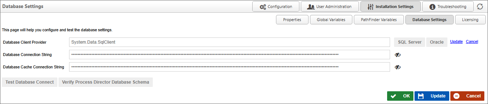

Database Settings
The Database Settings page allows you to set the database connection string and database client provider. Once you have entered your connection strings, ensure that you saved your settings. You may also test the connection by clicking the Test Database Connect button. This will return a valid statement or return an error. The Verify Process Director Database Schema button will run a test on the database to ensure that the data schema for the Process Director database you've selected is compatible with the version of Process Director you have installed.
For Process Director v6.0.100 and higher, the header text, Database Connection Page, has been changed to Database Settings, to match the page name specified on the navigation button.
For Process Director v6.1.500 and higher, two different database strings will be used for access to the Process Director database.
The Database Connection String will provide full access to the database, and will be used for important system operations. Operations that would use this connection string would be:
- Operations performed automatically on startup in dbUpgrade.cs (product schema changes).
- Creation of tables from CSV/XLS data using existing product functionality.
The Database Cache Connection String provide less-privileged access to the database, and is used for routine operations performed by users, such as:
- Storing/retrieving form instance data.
- Saving form templates from the Online Form Designer.
- Data sources using the Internal DB or Internal User DB.
- Business value configuration
- Configuring objects where you can configure some or all of the SQL used.
This change was made to improve database security, and to ensure that routine operations are performed in a more restrictive environment to prevent unauthorized changes to the database schema, etc.

 As a security enhancement to Process Director v6.0 and higher, passwords in connection strings and password fields are obfuscated by default, and will not display unless the "Eye" icon adjacent to the field is clicked, which will show the password in clear text.
As a security enhancement to Process Director v6.0 and higher, passwords in connection strings and password fields are obfuscated by default, and will not display unless the "Eye" icon adjacent to the field is clicked, which will show the password in clear text.